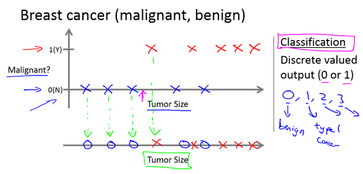

⚠ 转载请注明出处：作者：ZobinHuang，更新日期：Feb.7 2021
1. 监督学习定义
监督学习指的是，给定一组数据集，这些数据集中的每条数据都由输入值和输出值组成，也即是说对于某个数据集中特定的输入已经给定了确定的输出值，比如房子面积&房价，海拔&气压等，而监督学习算法是需要根据这些带有正确答案的数据集，得出规律（i.e. 回归问题中得出回归曲线，分类问题中得到分类区间，详见下面），然后依据这个学习到的规律去得到任意输入的输出值。常见的监督学习可以分为回归问题 (regression) 和 分类问题 (classification)，下面对其展开介绍。
2. 回归问题 (regression)

在监督学习中，若我们要构建的是一个能预测出连续输出的模型时，这就是一个回归问题。如上图所示，给定一个 房子面积&房价 的数据集（图中红X），我们需要根据这些数据集，运用监督学习算法得到一条曲线，不同的算法可能构建的曲线是不一样的，根据这条曲线我们就能对其它非数据集输入值进行房价的预测。
3. 分类问题 (classification)

在监督学习中，若我们要构建的是一个给输入贴标签的模型时，这就是一个分类问题。如上图所示，给定一个 肿瘤大小&是否恶性 的数据集（蓝色图标代表非恶性，红色反之），我们需要根据这些数据集，运用监督学习算法得到一个分类区间，例如算法得出的结果会是在上图所示的横轴某处，左侧的肿瘤大小对应非恶性，右侧反之。因此根据这个区间我们就能预测其他非数据集输入值是否为恶性肿瘤。注意到这个例子仅仅有一个变量，即肿瘤大小，实际中可能存在多变量的情况，例如两变量，可以具象化地想像为根据在二维空间中得到一条直线来进行分类，如下图所示，三变量可以想像为根据在三维空间中的一个平面来进行分类，以此类推。